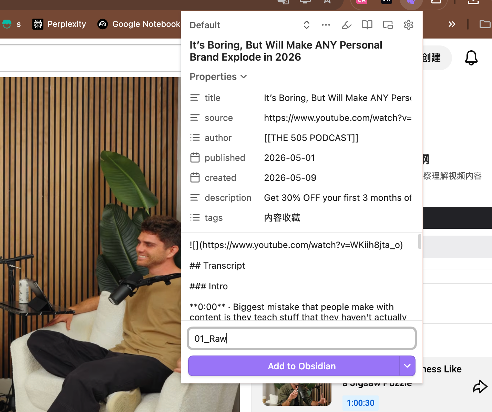
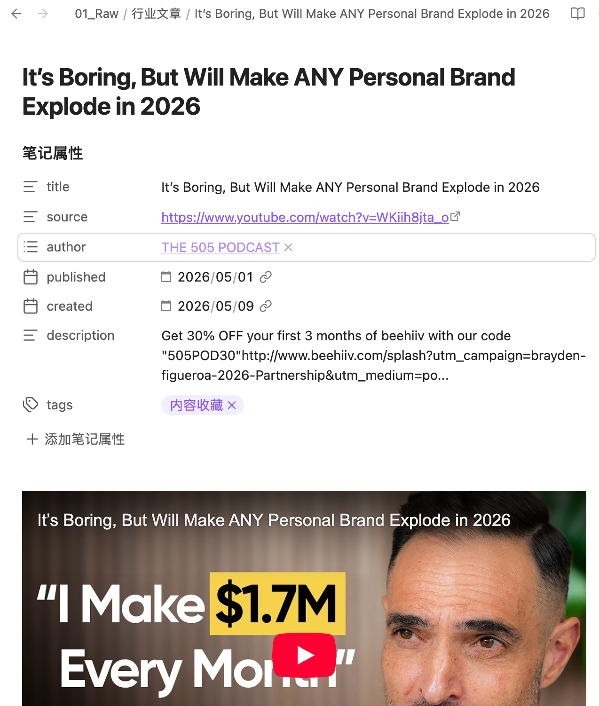

🦞
直播1｜认知升级 + 三层架构
+ 跑通你的 MVP 知识库
5月「LLM Wiki × 六间房」AI 实操营 · 第 1 课
90-120 分钟
5月10日 20:00
蓉蓉子 × 石榴🐾
1.1 为什么以前的知识库搭不起来？
"先问大家几个问题，符合的扣 1：
• 你是不是 Notion / 飞书 / Obsidian 都试过，但没一个用得起来？
• 你是不是收藏了几百篇好文章，但写东西时还是从零开始？
• 你是不是用 ChatGPT/Claude 时，它给你的回答总像在敷衍——『太对了，但跟你没关系』？
如果都中招，恭喜你——你不是不努力，你是用错了范式。
你做的是『资料堆积』，但这个时代真正有用的是让 AI 读懂你的大脑。"
1.2 Karpathy 的 LLM Wiki 是什么
传统 RAG 是『每次让 AI 临时去图书馆翻书』
LLM Wiki 是『你雇了一个私人图书管理员，他每天帮你整理书架，下次你问什么他直接答』
🔑 记住这三个角色的分工
| 层 | 谁写 | 谁读 | 规则 |
|---|
| Raw/ | 你 | AI | 你的原始素材，不可变。丢进去就别管了 |
| Wiki/ | AI | 你 | AI 自动提炼的信息卡，你审核纠正。不要手动改 |
| CLAUDE.md | 你+AI | AI | 你和 AI 的契约。你写规则，AI 遵守 |
RAG vs LLM Wiki 对比
你以前用 AI 是 左边那一列：每次提问它都从零开始去理解你。
LLM Wiki 是右边那一列：你的素材进来一次，AI 就帮你整理、分类、做交叉引用、写进信息卡。
下一次你问问题时，AI 调的是已经整理好的『你』——不是临时的搜索结果。
🏠 1.3 六间房 × LLM Wiki 联动
去年我搭了个『六间房』框架——01我是谁 / 02我会什么 / 03我说过什么 / 04我卖什么 / 05我面对谁 / 06我怎么想——这个框架解决的是『装什么』。
但很多人卡在了：装是装了，AI 还是不懂我。为什么？因为缺了怎么运转——也就是 LLM Wiki 的部分。
这次升级，我把两者合起来叫『六间房 LLM Wiki』：六间房告诉 AI 装什么，LLM Wiki 告诉 AI 怎么活。
六间房解决"装什么"，LLM Wiki 解决"怎么活"。CLAUDE.md 是你和 AI 之间的契约。
🛠 Part 2｜实操篇
现场搭建三层架构
⚠️ 下面开始动手。每一节都有明确的操作指令，直播时我跟屏幕共享带做。
安装工具
Obsidian（必装）
下载：https://obsidian.md
WorkBuddy（推荐）
下载：https://copilot.tencent.com/work/
安装后扫码登录 · 图形界面，无需命令行
Claude Code（备选）
# 终端里粘贴这行，回车
curl -fsSL https://claude.ai/install.sh | bash
# 安装完后，输入 claude 启动
claude
🛠 2.1 建目录结构
1
在桌面建一个空文件夹：ob-大脑（带连字符）
2
打开 WorkBuddy / Claude Code，输入：
"帮我建一个 ob-大脑 目录，里面有 raw/、wiki/、Output/ 三个文件夹，wiki 下面有 6 个子文件夹"
3
打开 Obsidian 管理仓库，选择本地建好的 ob-大脑
ob-大脑/
├── 01-raw/ ← 你的原始素材丢这里
│ ├── articles/ ← 文章
│ ├── chats/ ← 对话记录
│ └── notes/ ← 灵感碎片
├── 02-wiki/ ← AI 自动维护的信息卡
│ ├── 01_我是谁/ ← 身份/故事/VMV
│ ├── 02_我会什么/ ← 能力/方法论
│ ├── 03_我说过什么/ ← 风格/金句/代表作
│ ├── 04_我卖什么/ ← 产品/定价/SOP
│ ├── 05_我面对谁/ ← 用户画像/痛点
│ └── 06_我怎么想/ ← 框架/原则/边界
├── 03-output/
├── CLAUDE.md ← 你和 AI 的契约
├── index.md ← Wiki 索引
└── log.md ← 变更日志
📝 2.2 安装 Obsidian Web Clipper 浏览器插件⭐ 5月新增
"Day 4-5 你要喂大量素材给 AI——好文章 / 行业资料 / 竞品爆款。
没有 Web Clipper：复制粘贴一篇 5 分钟，喂 30 篇要 2.5 小时。
有了 Web Clipper：一键剪藏，喂 30 篇 < 10 分钟。
这是 21 天里最高 ROI 的工具。"
1
浏览器右上角点 🟫 Obsidian 图标
2
点击设置，选 ob大脑


📝 2.3 写第一版 CLAUDE.md—— 你的「大脑芯片」
复制到你的 CLAUDE.md里，填写（先用模板，后面迭代）
# 我的 LLM Wiki 规则书
## 一、我是谁（一句话定位）
- 名字：
- 一句话：[职业身份] + [服务对象] + [独特价值]
例：我是 [xx教练]，帮 [30+职场人] [打造小而美产品]
- MBTI/性格关键词：
## 二、六间房含义（AI 用这个分类素材）
| 房间 | 装什么 | 不装什么 |
|---|---|---|
| 01_我是谁 | 身份/故事/价值观 | 工作方法 |
| 02_我会什么 | 方法论/案例/能力 | 个人感悟 |
| 03_我说过什么 | 文章/金句/原话 | 别人说的 |
| 04_我卖什么 | 产品/价格/服务 | 想做未做的 |
| 05_我面对谁 | 用户画像/痛点/原话 | 我自己的话 |
| 06_我怎么想 | 框架/原则/边界 | 具体执行 |
## 三、写作风格（AI 模仿这个语气）
## 四、母题清单
## 五、Ingest 规则（AI 整理素材的方法）
## 六、Query 规则（AI 回答问题的方法）
## 七、边界规则（AI 必须守的红线）
🚧 2.4 划清"谁写谁读"边界
"**这个边界守住了，你的知识库才不会越用越乱。
raw 是你的档案室，wiki 是 AI 整理出来的图书馆，CLAUDE.md 是你们之间的契约。**"
2.5 「index.md / log.md」是 Wiki 的脊梁
它怎么知道'用户痛点在 5 号房而不是 6 号房'？
怎么知道'我昨天问的那个问题答案在哪张卡里'？
答案是 index.md——它是这个 wiki 的'门牌号系统'。
没有 index.md，AI 每次都得'瞎找'；有了 index.md，AI 才能'精准调用'。
而 log.md 是另一个隐藏主角——它记录每一次操作，是 wiki 健康的脊梁。
🎯 2.6 ⭐ 手写 vs AI 提炼分工
❶ 01_我是谁/一句话定位.md
→ 必须自己想清楚"我是谁"——这本身是过程
❷ 06_我怎么想/核心价值观.md
→ 必须从内心来——AI 编不出真价值观
❸ CLAUDE.md 第三节"写作风格"
→ 你和 AI 的契约，必须你写
02_我会什么 ← 方法论文章 / 课件
03_我说过什么 ← 公众号历史 / 朋友圈
04_我卖什么 ← 产品说明书 PDF
05_我面对谁 ← 咨询记录 / 学员反馈
"**地基卡你必须手写——因为这是 AI 替代不了的'你成为你'的过程。
装修部分让 AI 干——因为这是 AI 比你快 100 倍的事。**"
✋ 3.1 填 01_我是谁的第一张信息卡（8 分钟）— 手写地基卡 #1
"现在我们做最关键的一步——给 AI 先认识你。我们填 01 房间的第一张信息卡。
这是刚才讲的『3 张必须手写的地基卡』里的第一张——AI 替不了你。
因为'我是谁'这件事必须从你内心来，AI 编不出来。"
📌 信息卡模板
# 01-身份基座_我是谁.md
## 一句话定位
[在这里写一句话]
## 关键标签（3-5 个）
- 标签1：
- 标签2：
- 标签3：
## 我的三个高频原话
1. "________"
2. "________"
3. "________"
## 我最讨厌别人对我的误解
- "他们以为我是 X，其实我是 Y"
## 我的核心价值观（3 条）
1.
2.
3.
🤖 3.2 第一次 Ingest——见证魔法时刻🪄
1
准备一段真实素材
从你的电脑里找一段你自己的内容——最近写的文章、朋友圈、咨询记录都可以。
2
丢到 raw/ 文件夹
把素材文件拖到 raw/articles/ 或 raw/notes/
3
对 AI 说
请扫描 raw/ 目录下的新文件，
按 CLAUDE.md 的规则提炼信息卡，
写到对应的 wiki 房间。
如果有不确定归类的，先放到 Inbox。
验证
打开 wiki/ 对应房间——AI 应该已经帮你生成了一张信息卡 ✅
🔍 3.3 第一次 Query——向你的 Wiki 提问
现在反过来——你的 Wiki 已经有内容了，咱们让 AI 用你的 Wiki 回答问题。
📝 Query 示范题（选一个跑）
- "用我的 Wiki 给我写一段 100 字的自我介绍"
- "我的核心价值观是什么？引用来源"
- "如果有一个 30 岁的设计师来咨询，我应该怎么介绍自己？"
演示步骤：
- 在 Claude / WorkBuddy 输入上面任一问题
- 看 AI 是否调用了 wiki/01-我是谁 的内容 ✅
- 看 AI 是否标注了来源 ✅
- 看 AI 风格是否符合 CLAUDE.md 的语气定义 ✅
这就是 LLM Wiki 的复利——你今天填的一张信息卡，AI 明天能用、后天能用、一年后还能用。
你不是在堆资料，你是在养一个会越来越懂你的助手。
🎯 课后作业
| Day | 任务 | 验收 |
|---|
| Day 1（今晚） | ✅ 完成验收清单 5 项 | 实操营群里发「目录建好」截图 |
| Day 2-3 | 🤖 把 3-5 篇方法论文章丢 raw/ → AI 提炼到 02 房间 | 02 房间 ≥2 张卡 |
| Day 4-5 | 🤖 公众号文章 + 咨询记录 → AI 提炼到 03 + 05 | 03 风格采样 ≥30 段；05 痛点卡 ≥1 张 |
| Day 6 | ✋ 手写 06 核心价值观 | Query 测试：AI 自我介绍「像你」 |
| Day 7 | ✅ Phase 1 验收 | Lint 体检 + CLAUDE.md v2 |
💬 作业提交方式：和搭子互相确认 + 主群里发完成截图
🤝 搭子认领
搭子是这次实操营的『暗器』——技术陡增的时候，搭子能救你的命。
开营问卷里我已经收集了大家的技术背景，我会发『搭子配对名单』到群里。
强弱混搭，每组 2-3 人。
搭子游戏规则
🏆
最佳搭子奖
私教抵扣2000×2 + 小群深度辅导 + 学费全额退还
🌟
互助之星
私教抵扣1000 + 学费退还 + 30min 999咨询诊断
❓ Q&A 问题
Q1：我的 Obsidian 客户端打不开 ob-大脑？
A：换网页版。Obsidian 网页版支持本地文件夹，更轻量。
Q2：CLAUDE.md 写不出来怎么办？
A：先用模板原文，跑两天后再调。Schema 是迭代出来的，不是一次写好的。
Q3：raw/ 文件夹里能不能放 PDF？
A：可以，但 AI 直接读 PDF 体验差。建议：先把 PDF 转成 Markdown 再放进去。
Q4：04_我卖什么必须填吗？
A：不必。如果你还没有产品，先空着。等你的产品出来，再回头填。
Q5：我的 Wiki 写错了能改吗？
A：默认让 AI 改，不要直接改 wiki/——跟 AI 说"我看到 wiki/01.md 第 X 段不对，请改成 [新内容]"，它会改 + 自动写 log.md。例外：手写地基卡你可以直接改，但改完 @AI 同步一下。
✅ 直播 1 验收清单
下课前，确认以下 5 条全部 ✅
三层目录已建好（raw/ + wiki/ + CLAUDE.md）
跑通 1 次 Ingest（丢素材 → AI 提炼）
跑通 1 次 Query（提问 → AI 调 Wiki 回答）
📋 下周直播预告
| 日期 | 内容 |
|---|
| 直播 2 |
5月17日 20:00 |
🦞 领养你的龙虾 + 微信碎片自动入库 + AI 日报 |
| 直播 3 |
5月24日 20:00 |
🤖 打造数字员工 + 8 步法内容生产 |
💡 有任何问题，先在搭子群里问。搭子答不出，再到主群 @ 蓉蓉子。
—— 蓉蓉子 × 石榴🐾